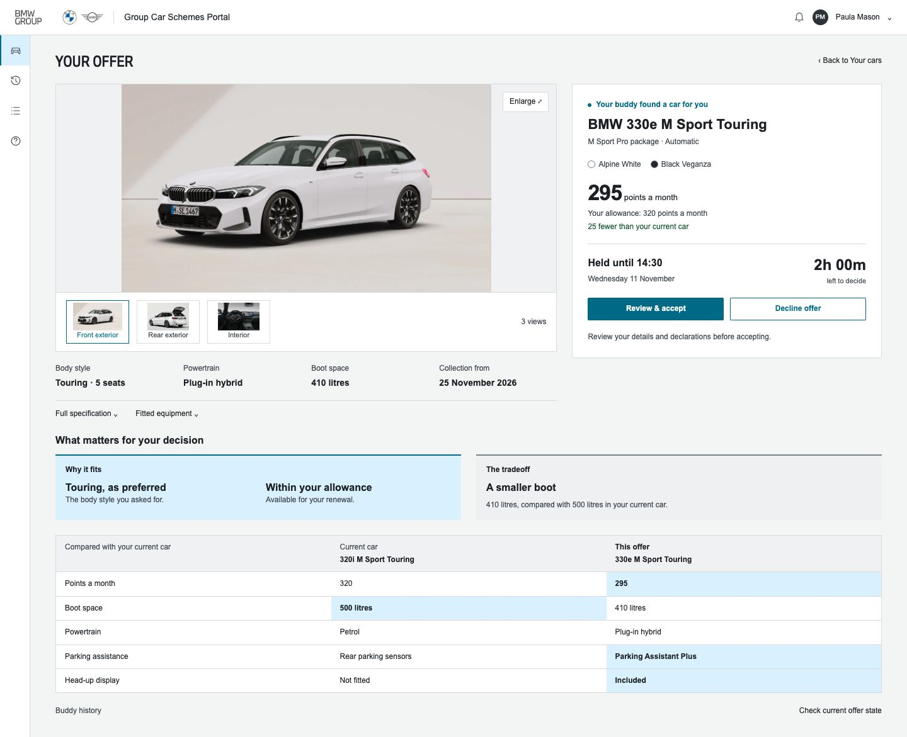
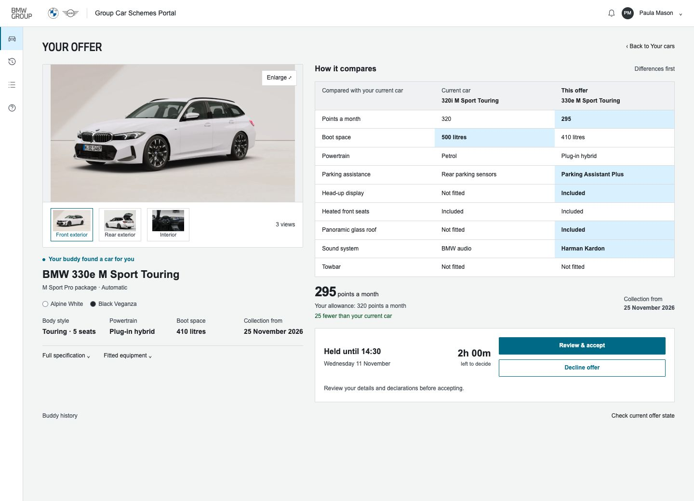
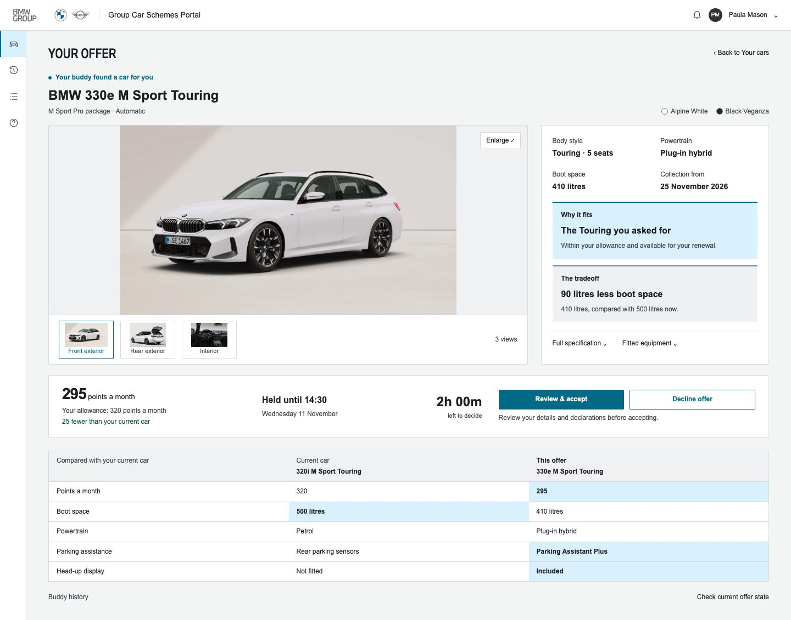

Keep the whole car visible. Bring time and action together. Explain the fit and the tradeoff once.
Large whole-car image; one panel for cost, deadline and decision.

Differences sit alongside the car; decision follows the evidence.

Wider gallery; one horizontal strip brings the decision together.

Closest to the agreed Your cars layout. The deadline belongs beside the decision; the smaller boot deserves equal clarity to the benefits. Keep rating and Buddy understanding on Your cars.
Static presentation only. Vehicle facts and fitted options reuse the earlier approved offer concept; they are visual content, not verified specifications or live availability.
The bell remains limited to current/new and expired offers. Search details and other Buddy events stay in Buddy history.